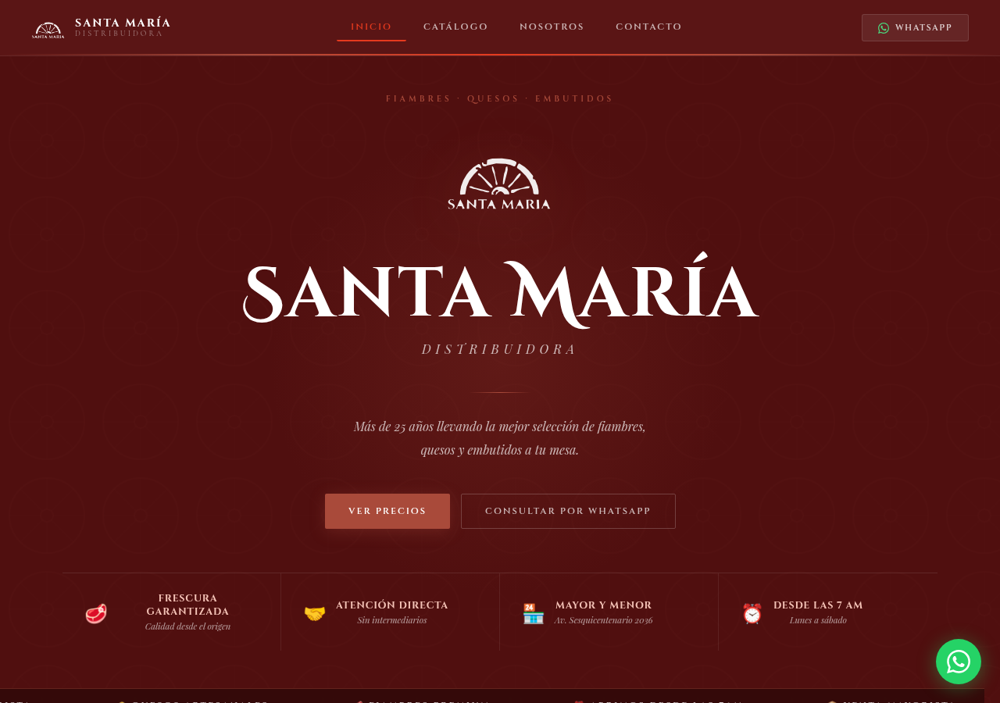
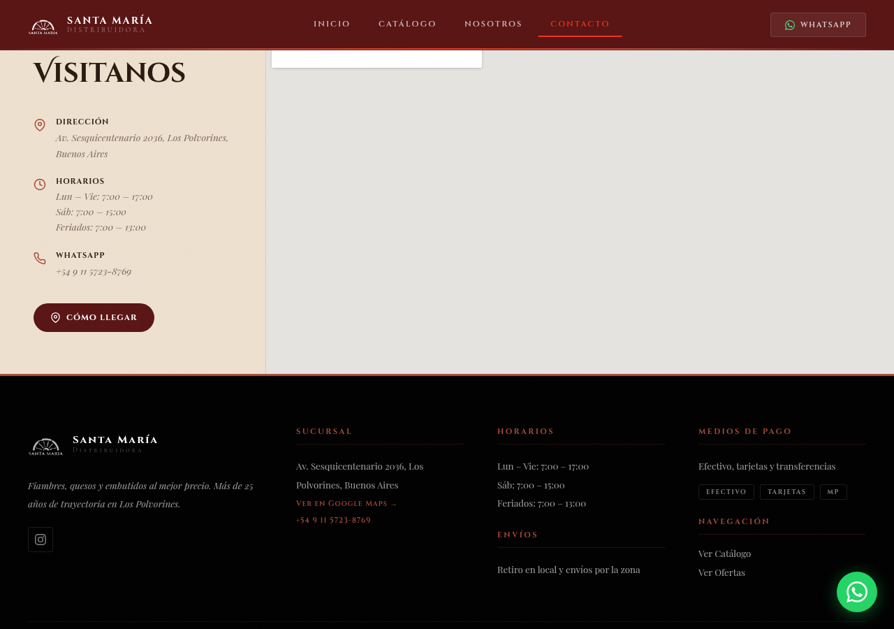
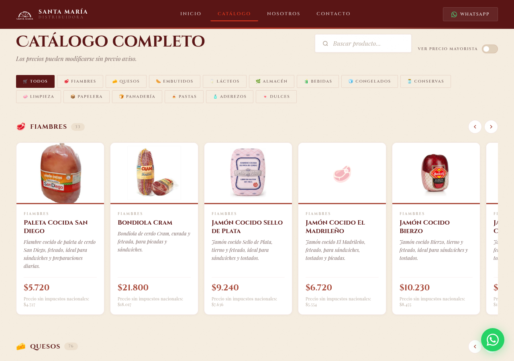
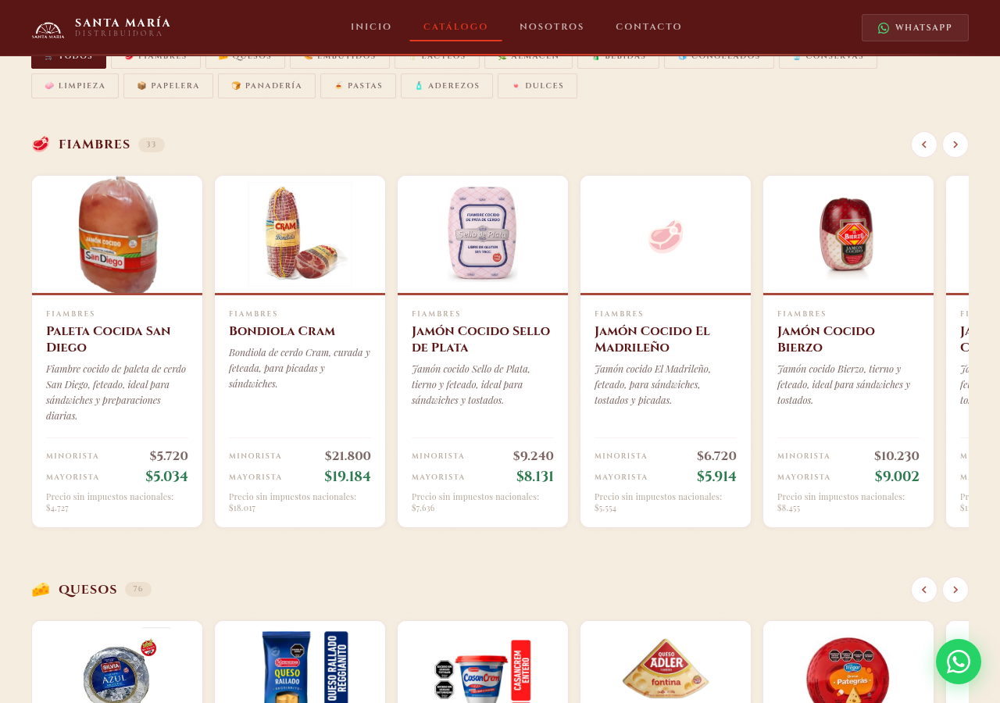

Todas las correcciones pedidas por la dirección ya están publicadas en el sitio. Debajo mostramos cada una con su captura tomada del catálogo en vivo.
1
Corrección
Portada actualizada

La portada ya dice «Más de 25 años», y los destacados muestran la nueva dirección (Av. Sesquicentenario 2036) y los días de atención (lunes a sábado).
2
Corrección
Dirección y horarios nuevos

Av. Sesquicentenario 2036, Los Polvorines en toda la página. Horarios de lunes a viernes de 7 a 17, sábados de 7 a 15 y feriados de 7 a 13. El mapa apunta al local correcto (verificado).
3
Corrección
Aviso de precios

El catálogo muestra la leyenda «Los precios pueden modificarse sin previo aviso», tal como se pidió.
4
Corrección
Precios transparentes

Cada producto muestra el precio minorista y el mayorista solo donde está cargado (se quitó el «a consultar» repetido). También figura el «Precio sin impuestos nacionales» que exige la normativa de transparencia.
Para cerrar esta etapa — tres definiciones
Fotos que faltan (~100 de 1.106). Son casi todas de marcas de distribuidoras locales que no tienen foto en internet (Silvina, Sol Pampeano, Par Nor, Delitap, entre otras). Se pueden conseguir de dos maneras: pidiéndoles el catálogo de imágenes a los preventistas, o sacándoles foto en el local (el sistema las deja con fondo blanco de forma automática). El resto del catálogo ya está al 90% con foto verificada.
Dominio propio. Para imprimir el QR y difundir el sitio conviene tener una dirección propia. Las opciones son santamariadist.com (disponible, USD 11,25 al año, coincide con el Instagram @santamaria_dist) o santamariadistribuidora.com.ar (vía NIC.ar). Falta elegir una.
Video de portada. La portada tiene un espacio para un video de fondo (del local o de los productos) que se activa desde el panel. Falta definir si se usa y con qué video.